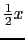
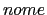
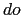
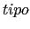

Expressões não tem somente um valor, mas também tem um tipo associado.
Se ambos os operandos de uma operação aritmética binária são do mesmo tipo, o resultado terá o mesmo tipo. Por exemplo:
3 + 5 é 8, e o tipo é int
3.5 + 2.25 é 5.75, e o tipo é double
O único comportamento não óbvio é a da divisão de inteiros:
30 / 5 é 6
31 / 5 é 6
29 / 5 é 5
3 / 5 é 0
Lembre-se de evitar escrever algo como 1 / 2 * x significando . Você sempre obterá o valor 0 porque 1 / 2 * x é (1 / 2) * x que é 0 * x que é 0. Para obter o resultado desejado, você poderia escrever 1.0 / 2.0 * x.
Valores podem ser convertidos de um tipo para outro implicitamente, da forma já comentada nas aulas feito pelo compilador, ou explicitamente, usando um operador chamado type casting.
Em expressões envolvendo operadores binários com operandos de tipos diferentes, os valores dos operandos são convertidos para o mesmo tipo antes da operação ser executada: tipos mais simples são ``promovidos'' para tipos mais complexos. Portanto, o resultado da avaliação de uma expressão com operandos de tipos diferentes será o tipo do operando mais complexo. Os tipos em C são (do mais simples para o mais complexo):
char < int < long < float < double
O sinal de < significa que o tipo da esquerda é promovido para o tipo da direita, e o resultado será do tipo mais a direita. Por exemplo:
3.5 + 1 é 4.5
4 * 2.5 é 10.0
Esta regra estende-se para expressões envolvendo múltiplos operadores, mas você deve se lembrar que a precedência e associatividade dos operadores pode influenciar no resultado. Vejamos o exemplo abaixo:
main()
{
int a, b;
printf("Entre uma fracao (numerador e denominador): ")
scanf("%d %d", &a, &b);
printf("A fracao em decimal e %f\n", 1.0 * a / b);
}
Multiplicando por 1.0 assegura que o resultado da multiplicação de 1.0 por a será do tipo real, e portanto, a regra de conversão automática evitará que o resultado da divisão seja truncado. Note que se tivéssemos primeiro feito a divisão a/b e depois multiplicado por 1.0, embora o tipo da expressão a/b*1.0 seja do tipo double, o valor da expressão seria diferente do valor de 1.0 * a/b. Por que ?
Em atribuições, o valor da expressão do lado direito é convertido para o tipo da variável do lado esquerdo da atribuição. Isto pode causar promoção ou ``rebaixamento'' de tipo. O ``rebaixamento'' pode causar perda de precisão ou mesmo resultar em valores errados.
Em operações de atribuição, atribuir um int em um float causará a conversão apropriada, e atribuir um float em um int causará truncamento. Por exemplo:
float a = 3; é equivalente a a = 3.0
int a = 3.1415; é equivalente a a = 3 (truncado)
Basicamente, se o valor da expressão do lado direito da atribuição é de um tipo que não cabe no tamanho do tipo da variável do lado esquerdo, resultados errados e não esperados podem ocorrer.
Os tipos de dados básicos em C podem estar acompanhados por modificadores na declaração de variáveis. Tais modificadores são: long, short, signed e unsigned. Os dois primeiros têm impacto no tamanho (número de bits) usados para representar um valor e os dois últimos indicam se o tipo será usado para representar valores negativos e positivos (signed) ou sem este modificador) ou apenas positivos (unsigned).
A Tabela 2 mostra uma lista completa de todos os tipos
de dados em C, com e sem modificadores:
O C tem um operador para alterar o tipo de um valor explicitamente. Este operador é chamado de cast. Executando um cast de tipos, o valor da expressão é forçado a ser de um tipo particular, não importando a regra de conversão de tipos.
O formato do cast de tipos é:
(--)
O parênteses NÃO é opcional na expressão acima.
Podemos usar o cast de tipos da seguinte forma:
int fahr = 5;
float cels;
printf("Valor = %f\n", (float)fahr);
cels = (float)5 / 9 * (fahr - 32);
printf("celsius = %d\n", (int)cels);
Agora que conhecemos o operador de cast de tipo podemos reescrever o programa que faz a conversão de fração para decimal.
main()
{
int a, b;
printf("Entre com uma fracao (numerador e denominador): ")
scanf("%d %d", &a, &b);
printf("A fracao em decimal e %f\n", (float) a / b);
}
O cast de tipo tem a maior precedência possível, portanto podemos fazer o cast de a ou de b para ser do tipo float, e não há necessidade de parênteses extra. No exemplo acima, o cast causa o valor da variável a ser convertido para float, mas não causa mudança no tipo da variável a. O tipo das variáveis é definido uma vez na declaração e não pode ser alterado.